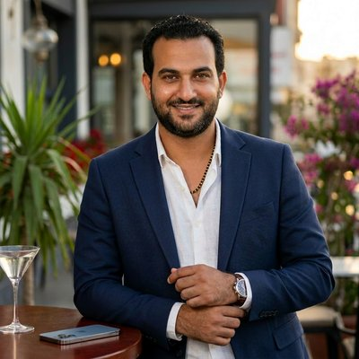

Mahmoud
Ali — AI / NLP Solution Architect | Autonomous AI Systems Engineer
Where Autonomous Intelligence, Multi-Agent Orchestration & Production AI Infrastructure Converge.
Cairo, Egypt
About Me
I'm a Senior AI / NLP Solution Architect with over 8 years of experience designing and deploying enterprise AI systems, autonomous agent architectures, Retrieval-Augmented Generation (RAG) pipelines, Arabic NLP platforms, and production-grade LLM infrastructures.
My career started in computational linguistics — developing Arabic NLP grammars, semantic parsers, and named entity recognition systems at research labs including Bibliotheca Alexandrina and Egypt's Ministry of Communications & IT. I've contributed to language models serving millions of users and worked across Arabic NLP, machine translation, and knowledge graph systems.
At Tribal Credit (a FinTech startup in San Jose), I led NLP algorithm development for financial text analysis, built predictive models for merchant data, and designed knowledge base systems powered by LLMs — reducing manual analytics workflows by 40% through AI-driven automation.
Today I architect and deploy production AI systems — including a 138-module multi-agent intelligence platform, autonomous LLM trading agents, enterprise RAG pipelines, and a 100+ modular AI skills library — processing 50K+ daily real-time market events across Forex, equities, and crypto.
Quick Facts
Experience
From computational linguistics research to enterprise AI systems architecture and autonomous agent engineering.
Designed and deployed advanced enterprise AI systems focused on autonomous intelligence, multi-agent orchestration, RAG, and production AI infrastructure. Architected 10+ production AI systems processing 50K+ real-time market events daily. Built a 138-module multi-agent intelligence platform and developed autonomous LLM agents using OpenAI APIs, Claude SDKs, and MCP Protocol.
Developed NLP classification systems for financial document processing. Built customer sentiment intelligence systems integrating NPS analysis and churn prediction. Designed clustering and dimensionality reduction pipelines. Created MerchantDataOps, a data standardization platform. Reduced manual analytics workflows by 40%.
Fine-tuned Arabic-English machine translation models improving BLEU scores by 12%. Curated and processed 50K+ multilingual linguistic samples. Developed NLP automation systems increasing operational throughput by 20%.
Developed Arabic NER systems for government-scale text intelligence processing. Built semantic relation extraction pipelines. Designed taxonomic knowledge graph systems across large government datasets. Contributed to Arabic language intelligence infrastructure initiatives.
Built Arabic NLP systems processing 100K+ documents daily. Improved Arabic language processing accuracy by 25%. Increased intent classification F1-score from 0.78 to 0.91. Developed multi-dialect NLP pipelines supporting MSA, Egyptian, Gulf, and Levantine Arabic.
Education
Certifications
Show all certifications
Tech Stack
Languages and tools I use to build robust and scalable applications, based on my actual GitHub repository data.
AI & LLM Systems
RAG & Knowledge Systems
Agentic AI & Orchestration
NLP & Arabic AI
ML Engineering
Backend & Infrastructure
Algo Trading & Quant
Projects & Open Source
All 20+ public repositories, classified by domain. Data sourced live from GitHub.
Multi-agent LLM orchestration, Claude SDK integrations, and AI provider gateways.
102 Claude Code skills across 7 categories — trading strategies, Azure, VSCode extensions, AI prompts, and custom automation skills.
138-module multi-analyst intelligence system — macro, cross-asset, geopolitical, alternative data analysts. FastAPI + multi-AI + ML + Telegram/email alerts.
Multi-agent XAUUSD analysis platform — chart, correlations, market structure, sentiment, risk, volume agents with GLM-5 AI.
Multi-provider AI orchestration gateway routing across OpenAI, Anthropic Claude, and Google Gemini with a unified API and failover.
TypeScript studio for composing and running opencode multi-agent workflows with visual orchestration and runtime controls.
Production-grade trading platforms, order flow engines, and ML-driven edge extraction for MT5 and crypto.
11-layer institutional flow confluence system — intermarket, volume profile, liquidity, order flow, sentiment, LLM evaluation. 14-page Dash dashboard + execution engine.
19-strategy MT5 trading system across Gold, NAS100, US30, US500, Crypto. Real-time Dash dashboard, alerts, journal, risk management.
Order flow analysis with Bybit + MT5 feeds — footprint charts, delta analytics, volume profile, pattern detection, Dash dashboard with WebSocket.
3-thread order flow scalper for MT5 — footprint charts, delta analysis, key levels, auto-execution.
Claude Agent SDK-based trading system — Claude AI analyzes ICT/SMC patterns, auto-executes trades via MT5 MCP server.
ML-based edge extraction framework for MT5 — mean reversion, pairs, volatility edges. Walk-forward + bootstrap validation. HTML reports.
Arabic NLP tooling, classifiers, NER, and preprocessing utilities from my computational linguistics work.
Multiclass Arabic text classification using Keras — preprocessing, tokenization, model training on Arabic corpora.
Arabic NER pipeline — entity tagging for persons, locations, organizations in Modern Standard Arabic.
NLTK recipes and extensions focused on Arabic: tokenization, stopwords, stemming, frequency analysis.
Arabic text cleaning utility — diacritics, elongations, normalization, and boilerplate stripping for NLP pipelines.
Browser extensions and standalone tools bridging AI with consumer apps.
Teaching material and reference notebooks covering ML, scikit-learn, and Python analytics.
Tutorials on Machine Learning and Deep Learning with Python — walkthroughs, notebooks, and reference implementations.
Everything you need to know about using Scikit-learn for Machine Learning — classification, regression, clustering, preprocessing.
Python dispersion-plot recipe for visualizing where keywords occur across a text — useful for corpus exploration.
Enterprise NLP, data science, and linguistic engineering work across my career at Tribal, MCIT, TA Telecom, Lionbridge, Qordoba, LangTec, and Bibliotheca Alexandrina.
Strategic use of ChatGPT API + web search to gather, validate, and enrich a knowledge base for entities across enterprise data.
Clustering, classification, and dimensionality-reduction on feedback datasets to surface topics and visualize relationships.
Integrated NPS and Churn Zero scores with feedback topics to identify key drivers of satisfaction and churn.
Data cleaning and standardization pipeline for merchant entities to enforce accuracy, reliability, and standardized formats.
Predefined multi-label classification of text documents across more than two categories using supervised ML models.
NLP pipeline that identifies and classifies persons, organizations, locations and other entities in Arabic text.
Show 8 more professional projects
Adapted NLTK for Arabic: tokenization, stopwords, stemming/lemmatization, POS tagging and corpora handling.
Analysis of colloquial Arabic: informal vocabulary, simplified syntax, morphology, code-switching and cultural references.
Segmented text based on a probabilistic unigram model, using the Viterbi algorithm to find the most probable boundaries.
Rule-based and dictionary-driven spelling checker for Arabic text that detects and suggests corrections for misspellings.
Multilingual data handling, cleaning, and mapping for translation pipelines: integrity checks, inconsistency resolution, and structure optimization.
Context-free grammar + attribute-grammar framework (AGFL) for describing syntax and semantics, used to build parsers.
Sentiment analysis of tweets, comments and posts using NLP + ML to surface public opinion trends on social media.
Analysis and generative grammar system for Arabic using the Universal Networking Language framework for cross-language semantics.
Case Studies
Deep dives into complex problems I've solved.
Production-Grade LLM Agent Swarm
The Problem
An enterprise client needed to automate complex multi-step research and analysis workflows that previously required 3-4 human analysts working in parallel. Single-model prompting was too slow, too expensive, and too brittle for production use.
The Approach
Architected a multi-agent orchestration system using Claude as the backbone LLM, with specialized sub-agents for retrieval, reasoning, critique, and synthesis. Built a custom tool-calling framework with retry logic, rate-limit management, and structured output contracts.
The Outcome
Reduced end-to-end research time from 4 hours to under 12 minutes. System handles 300+ daily automated briefings with a 98.7% success rate. Cost per task fell by 60% compared to naive single-call implementations.
Transformer-Based NLP Pipeline
The Problem
A financial data provider needed to extract structured signals from unstructured earnings call transcripts, SEC filings, and news articles at scale — existing keyword-based systems produced too many false positives.
The Approach
Built an end-to-end NLP pipeline combining a fine-tuned FinBERT model for sentiment classification with a custom NER layer for entity linking. Implemented RAG to ground extractions in verified source passages. Deployed as a streaming microservice with sub-200ms p95 latency.
The Outcome
Achieved 91% extraction accuracy on a held-out benchmark, a 34-point improvement over the keyword system. Pipeline processes 15,000+ documents daily, feeding directly into quantitative trading signals.
Algorithmic Trading System (MQL5)
The Problem
Manual discretionary trading on MetaTrader 5 was leaving profitable patterns unexploited — strategies requiring reaction times under 200ms and monitoring 12+ instruments simultaneously were beyond human capacity.
The Approach
Engineered a suite of 24 MQL5 Expert Advisors covering trend-following, mean-reversion, and breakout strategies. Implemented unified risk management with dynamic position sizing, drawdown circuit-breakers, and correlation-aware portfolio controls.
The Outcome
Strategies achieved MQL5 Marketplace verification with an average rating of 3.6 across 24 products. Live-traded portfolios sustained consistent performance over 18 months with max drawdown under 8%.
Featured Articles
Technical deep dives published on Medium — covering AI systems, NLP pipelines, and quantitative trading.
10 senior analyst agents, 55 sub-agents, 9 ML models, real-time consensus engine — how I architected an institutional-grade market intelligence platform that thinks like a Wall Street desk.
Read on Medium ↗Designing a production-grade AI gateway that routes, optimizes, and fails over across OpenAI, Anthropic, and Google — automatically.
Read on Medium ↗Volume Profile reveals where institutions actually traded — and why price keeps bouncing at Point of Control levels.
Read on Medium ↗Automated Fair Value Gap detection with volume-weighted significance scoring, mitigation tracking, and multi-timeframe context for MT5.
Read on Medium ↗A comprehensive guide to the libraries that power modern AI/ML systems — from data ingestion and modeling to serving and observability.
Read on Medium ↗Enhanced trading bot combining Information Theory (Shannon Entropy) for noise analysis with institutional-grade risk controls.
Read on Medium ↗A universal wrapper that auto-discovers indicator buffers and generates backtestable strategies on MetaTrader 4/5 with minimal code.
Read on Medium ↗Feature compression, structural edge ranking, and production pipeline deployment for quantitative strategy discovery.
Read on Medium ↗Model selection, walk-forward validation, and robustness testing for discovered market edges.
Read on Medium ↗Feature engineering foundations for market edge discovery — from raw bars to structural signals.
Read on Medium ↗Get In Touch
Open to AI Systems Architect roles, autonomous AI projects, RAG engineering, and enterprise AI platform collaborations. Whether you have a project in mind or just want to connect, reach out.
Say Hello